PSIMRCC Implementation of Mk-MRCC Theory¶
Code author: Francesco A. Evangelista and Andrew C. Simmonett
Section author: Alexander E. Vaughn
Module: Keywords, PSI Variables, PSIMRCC
State-specific Multireference coupled cluster theories provide highly accurate energies and properties of electronic states that require a multiconfigurational zeroth-order wavefunction. The PSIMRCC module contained in Psi4 implements the state-specific multireference coupled-cluster approach of Mukherjee and co-workers (Mk-MRCC). This method is implemented and shown to be a powerful tool in [Evangelista:2006:154113] and [Evangelista:2008:124104]. Mk-MRCC is based on the Jeziorski-Monkhorst ansatz [Jeziorski:1981:1668] for the wavefunction,
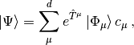
where 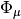 are the reference determinants, 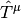 are reference-specific excitation operators, and 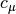 are expansion coefficients obtained through diagonalization of the Mk-MRCC effective Hamiltonian matrix that allows the various reference determinants to interact. As an example of how this works the Mk-MRCCSD excitation operators for each reference is contracted two-body terms

where
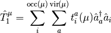
and
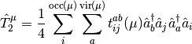
The Mk-MRCC energy is a chosen eigenvalue of the effective Hamiltonian, 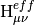
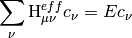
where
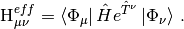
Psi4 currently implements Mk-MRCC with singles and doubles [Mk-MRCCSD] and Mk-MRCCSD with perturbative triples [Mk-MRCCSD(T)] as formulated in [Evangelista:2010:074107]. A companion perturbation method (Mk-MRPT2) has been developed based on the Mukherjee formalisim as shown in [Evangelista:2009:4728].
The current version of the code is limited to reference active spaces in which all determinants are connected to each other by no more than two excitations. In practice, this usually means that the active space can have at most two particles, or at most two holes. Examples would include CAS(2,2), CAS(2,8), CAS(4,3), etc., where CAS(n,m) refers to a complete-active-space configuration interaction (CAS-CI) reference with n electrons in m orbitals. If the user specifies active spaces that do not fit these limitations, then the code will still run, but some relevant determinants will be missing, and the answer obtained will be an approximation to the true Mk-MRCC procedure.
The PSIMRCC code itself does not perform orbital optimization. Hence, the
references used might be considered CAS-CI references, but not CASSCF
references (CASSCF implies that the orbitals have been optimized specifically
to minimize the energy of the CAS-CI reference). However, if one wishes to
use two-configuration self-consistent-field (TCSCF) orbitals, those can
be obtained using the multi-configuration self-consistent-field (MCSCF)
component of PSIMRCC (specifying REFERENCE to be twocon).
This is suitable for describing diradicals. Otherwise, one may use RHF or
ROHF orbitals as input to PSIMRCC. Due to a current limitation in the code,
one must obtain orbitals using PSIMRCC’s MCSCF module regardless of what
orbital type is chosen, twocon, rhf, or rohf. An example of the
MCSCF input is given below.
PSIMRCC is most commonly used for low-spin cases (singlets or open-shell singlets). It is capable of performing computations on higher spin states (e.g., triplets), but in general, not all the required matrix elements have been coded for high-spin cases, meaning that results will correspond to an approximate Mk-MRCC computation for high-spin cases.
A Simple Example¶
The CORR_WFN allows you to select one of three methods
Mk-MRPT2 [PT2], Mk-MRCCSD [CCSD], or Mk-MRCCSD(T) [CCSD_T].
The CORR_MULTP option allows you to select the Slater
determinants with a particular 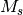 value. The WFN_SYM
keyword is neccesary if you do not want to compute the energy of the
totally-symmetric state. The FOLLOW_ROOT option may be used
to follow different roots of the effective Hamiltonian. A value of 1
instructs PSIMRCC to follow the solution with the lowest energy given
a certain set of determinants.
molecule o2 {
0 3
O
O 1 2.265122720724
units au
}
set {
basis cc-pvtz
}
set mcscf {
reference rohf
docc [3,0,0,0,0,2,1,1] # Doubly occupied MOs
socc [0,0,1,1,0,0,0,0] # Singly occupied MOs
}
set psimrcc {
corr_wfn ccsd # Do Mk-MRCCSD
frozen_docc [1,0,0,0,0,1,0,0] # Frozen MOs
restricted_docc [2,0,0,0,0,1,1,1] # Doubly occupied MOs
active [0,0,1,1,0,0,0,0] # Active MOs
frozen_uocc [0,0,0,0,0,0,0,0] # Frozen virtual MOs
corr_multp 1 # Select the Ms = 0 component
follow_root 1
wfn_sym B1g # Select the B1g state
}
energy('psimrcc')
Note that the oxygen molecule has 16 electrons (including core), while
the docc array contains only 7 doubly-occupied orbitals (or 14
electrons). Hence, two more electrons are available to place into
the active space (given by active), which consists of 2 orbitals.
Thus there are two active electrons in two orbitals. In this particular
example, we are using standard ROHF orbitals for the Mk-MRCCSD procedure,
rather than TCSCF orbitals. Nevertheless, with the present code,
these orbitals must be provided through the MCSCF module, as specified in the
set mcscf section above.
Orbital ordering and selection of the model space¶
The reference determinants are specified in PSIMRCC via occupational numbers. PSIMRCC requires that four arrays be specified for this purpose.
- Frozen doubly occupied orbitals (FROZEN_DOCC) are doubly occupied in each reference determinant and are not correlated in the MRCC procedure.
- Doubly occupied orbitals (RESTRICTED_DOCC) are doubly occupied in each reference determinant and are correlated in the MRCC procedure.
- Active orbitals (ACTIVE) are partially occupied in each reference determinant.
- Frozen virtual orbitals (FROZEN_UOCC) are unoccupied in all reference determinants and are excluded from the correlated wave function.
The model space is selected by considering all possible occupations of the electrons among the orbitals in the active space that result in determinants with the correct symmetry (WFN_SYM) and the correct 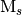 value specified by the keyword CORR_MULTP. Note that this does not consider the multiplicity of the wavefunction. Thus, in order to obtain the wavefunction with a set of reference determinants for an open-shell system you should request a CORR_MULTP of 1 within the PSIMRCC module, and select the root of the effective Hamiltonian that corresponds to the state of interest. In addition, the WFN_SYM keyword needs to be specified otherwise the wavefunction belonging to the all-symmetric irrep will be selected. In addition, it should be noted that for an open-shell singlet based on two determinants the eigenvector is [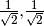], which corresponds to a wavefunction of the following form:
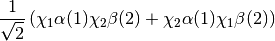
See Appendix PSIMRCC for a complete list of PSIMRCC options.